集群登录¶
浏览器登录¶
选择”工作台“-”资源总览“，可以看到平台提供的公共集群"public_cluster"。
{kind=link}
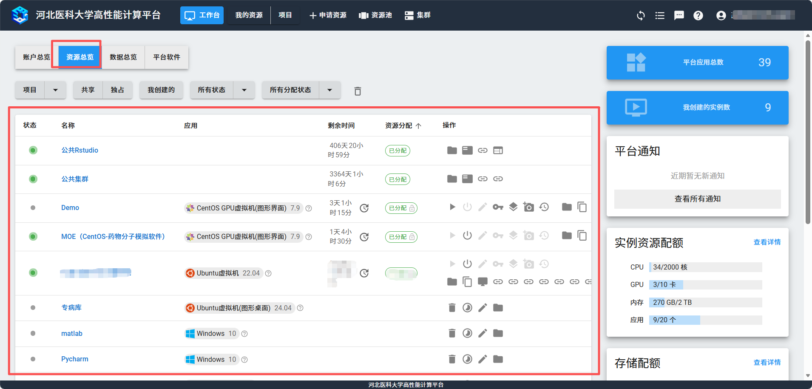
选择所需使用的公共集群，点击如图所示图标，即可登录字符控制台界面
{kind=link}
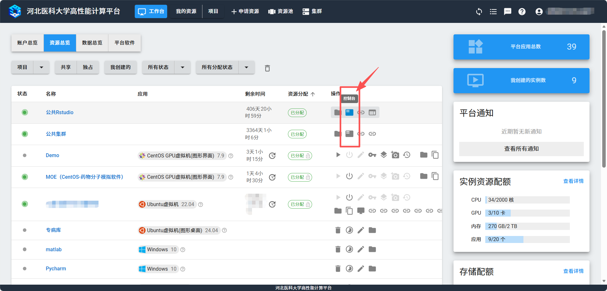
查看SSH登录信息
注意
在 首次使用 SSH登录之前，需要通过平台管理界面重置密码。
每套虚拟集群有自己的访问端口，在“工作台”-“资源总览”中通过点击如图所示图标可显示集群的IP和端口信息。
{kind=link}
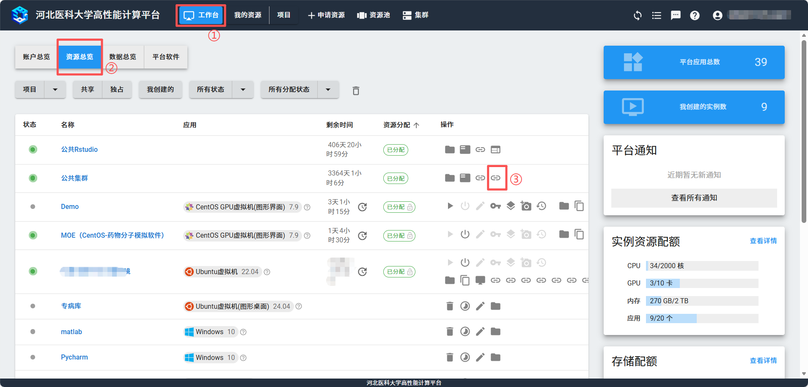
请使用红框框选出的地址,进行双击全选复制，连端口一起复制下来。
{kind=link}
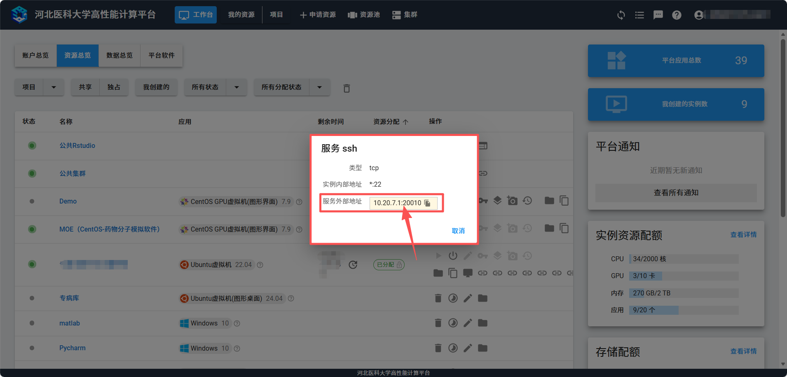
Windows推荐使用 PuTTY ↗， SecureCRT ↗ 或 Xshell ↗ 或 Xmanager ↗ 等客户端访问集群的服务端口，Linux/Mac直接使用终端即可。
SSH免密码登录¶
SSH免密码登录需要一对密钥对，包括一个公钥和一个私钥，其中私钥放在用户本机，公钥放在集群的 ~/.ssh/authorized_keys 目录。下次登录时，用户本机的私钥和远程集群的公钥通过加密协议验证配对，验证成功后将不需要密码直接登录成功。所以这里需要生成公私钥，并将公钥上传到目标实例的指定位置。
使用SSH客户端免密码登录主要需要两步：
在用户本机生成公私钥。 将公钥添加到计算云目标实例的 ~/.ssh/authorized_keys 文件末尾。
生成密钥对
SSH 密钥对生成指南¶
本节介绍不同操作系统下生成 SSH 密钥对的详细步骤，包含文本说明、操作截图和命令行代码块。
- sync:
macos
直接使用终端在用户本机生成公钥和私钥。
输入命令 ssh-keygen -t rsa ：
1 | |
终端会提示：
1 2 | |
括号内为生成的公私钥的默认目录位置，直接回车就会使用这个默认位置。
{kind=link}
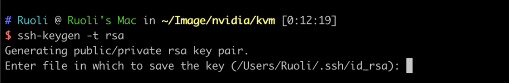
如果默认位置已经生成过公私钥，则终端会提示是否需要覆盖，这时可不用再次生成公私钥。
1 2 | |
终端会提示输入密码passphrase，这个密码为生成私钥的密码，将来防止私钥被其他人盗用。这里可以不输入任何密码，直接回车，再次提示输入密码，再次回车。
{kind=link}
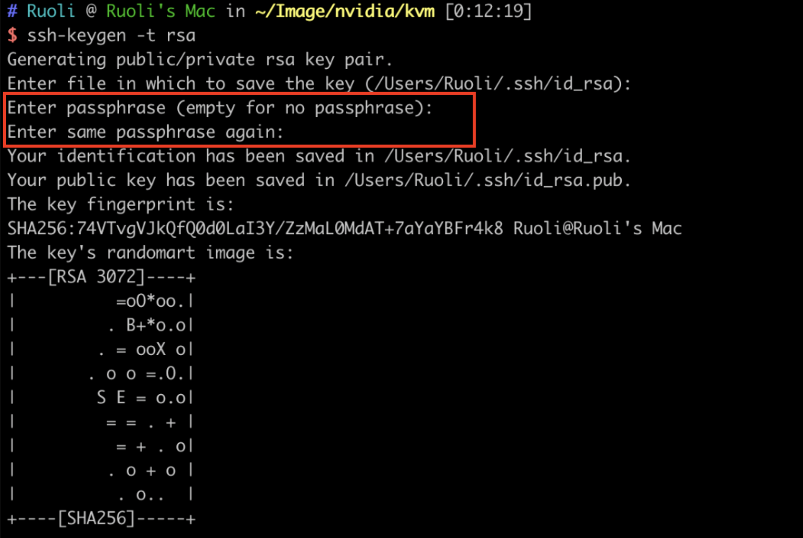
这时公钥存储在 /Users/~your-local-username~/.ssh/id_rsa.pub 文件里，私钥存储在 /Users/~your-local-username~/.ssh/id_rsa 文件里。
{kind=link}
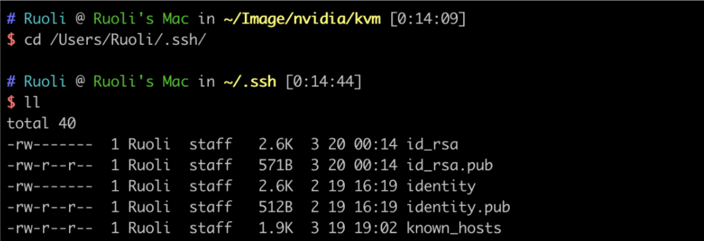
获取公钥，将返回值拷贝到剪贴板。
1 | |
{kind=link}
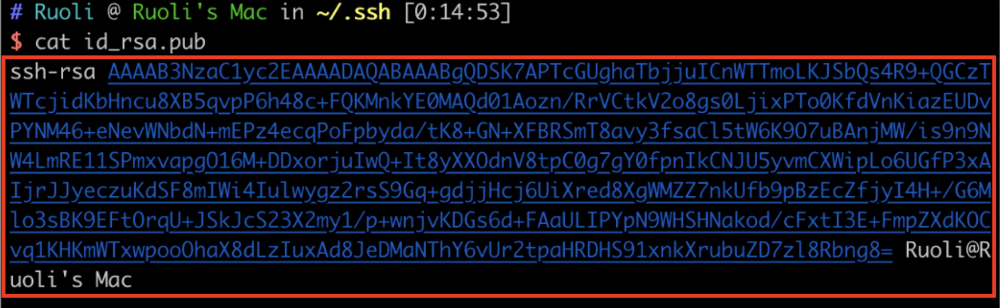
- sync:
windows-ssh
可以通过 PuTTY ↗ 或 Xshell ↗ 生成公私钥。下面以Xshell软件为例，介绍公私钥生成。
打开Xshell工具，工具栏有一个工具选项，点开选择新建用户密钥生成向导。
{kind=link}
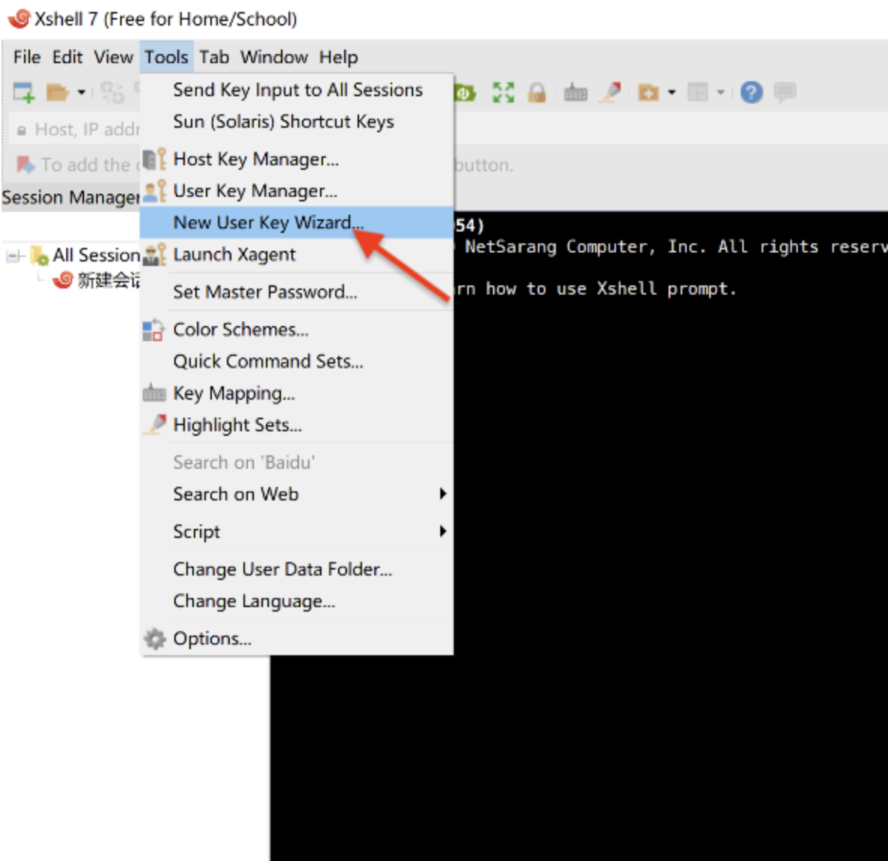
密钥类型默认使用RSA，密钥长度默认2048位，点击下一步。
{kind=link}
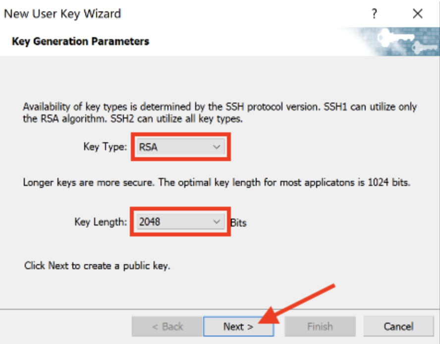
等待软件自动生成密钥对后点击下一步。
{kind=link}
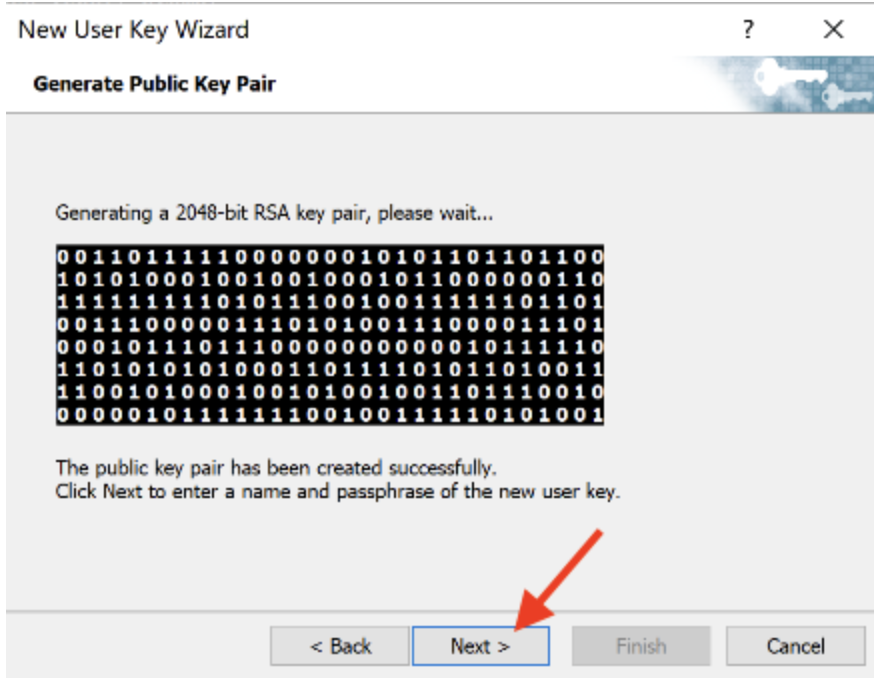
按照软件指引配置密钥名称和密码后点击下一步。
- warning:
该密码加密您的私钥文件，若遗忘，则需要重新生成公私钥并重新添加至集群，请牢记！
软件会显示生成的公钥，选中公钥复制到剪贴板，然后点击结束，将公钥另存为文件。
{kind=link}
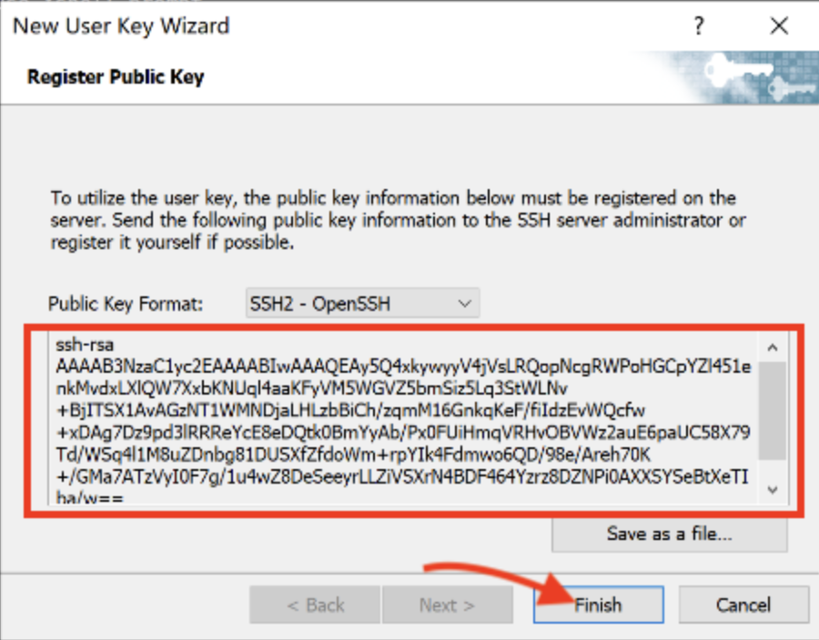
{kind=link}
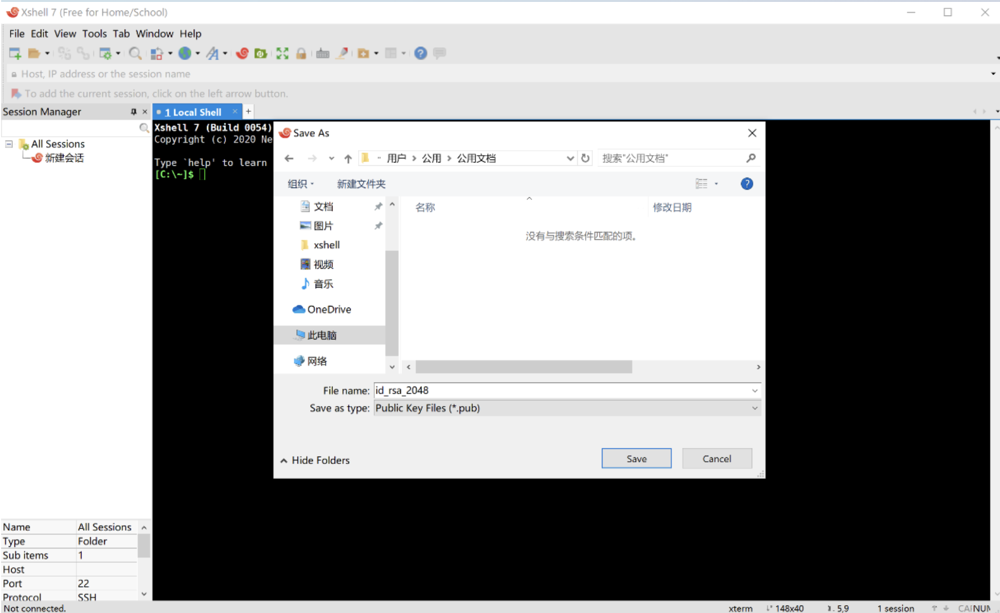
将公钥添加到集群
接下来需要将刚刚复制的公钥追加到集群内 ~/.ssh/authorized_keys 。先使用 Web SSH登录 <web login> 到集群，在Web终端中输入如下命令：
1echo "ssh-rsa AAAA..." >> ~/.ssh/authorized_keys
其中，将 ssh-rsa AAAA.. 替换为刚才复制的公钥。
用密钥登录集群
- sync:
macos
本地机器上打开自带的终端，按照上文查看要登录的集群SSH IP和端口信息，输入如下命令后回车登录集群：
1 | |
其中， 202.201.1.198 和 20139 分别替换为集群的SSH IP地址和端口， username 替换为自己的平台用户名。
如果显示类似如下提示，输入 yes 后回车，即可正常登录。
1 2 3 | |
- sync:
macos
此处以 Xshell ↗ 登录为例。
点击软件左上角新建会话属性，按照上文查看要登录的集群SSH IP和端口信息，输入SSH IP地址和端口后点击连接。
{kind=link}
输入平台用户名后点击OK。
{kind=link}
在用户身份验证界面选择“Public Key”，选择上文中保存在本地的公钥文件。如果之前在生成密钥对时设置了密钥密码，还需要一并输入密码。
{kind=link}
点击确认，成功登录。
{kind=link}
SSH服务配置
启动实例，打开终端安装ssh服务
1sudo yum install openssh-server
开启ssh服务
1sudo service sshd start
如果提示 service command not found ，执行如下命令：
1sudo yum install initscripts -y
更改用户密码
sudo -i passwd Usename(用户名)
然后输入新密码。
用ssh工具远程登陆实例。